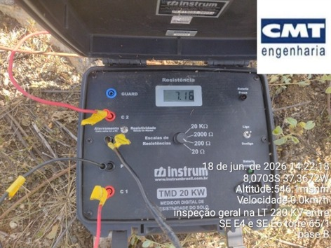
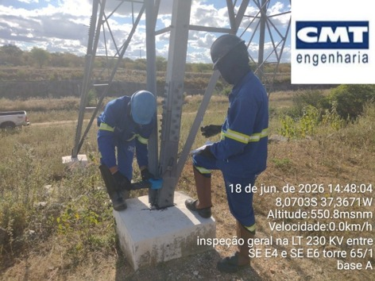
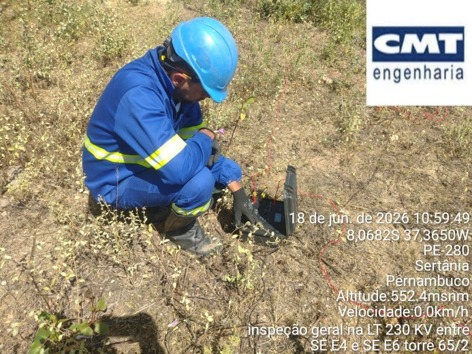
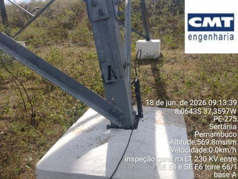

Medição de resistência com terrômetro


Torres da LT 230 kV
Torre 064/002
| Base | Resistência |
|---|---|
| Base A | 1,32 Ω |
| Base B | 28,6 Ω |
| Base C | 49,6 Ω |
| Base D | 1,29 Ω |
Torre 064/001
| Base | Resistência |
|---|---|
| Base A | 5,76 Ω |
| Base B | 8,82 Ω |
| Base C | 5,99 Ω |
| Base D | 5,39 Ω |
Torre 063/002
| Base | Resistência |
|---|---|
| Base A | 8,10 Ω |
| Base B | 7,99 Ω |
| Base C | 7,87 Ω |
| Base D | 7,90 Ω |
Legenda
Ω — ohm (unidade de resistência elétrica)



